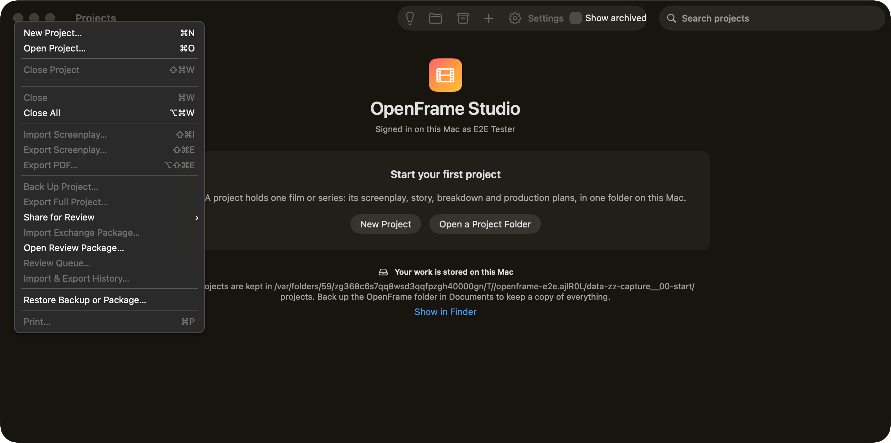

menu-bar. Controls on this screen:

OpenFrame Studio Signed in on this Mac as E2E Tester Start your first project A project holds one film or series: its screenplay, story, breakdown and production plans, in one folder on this Mac. Your work is stored on this Mac Projects are kept in /var/folders/59/zg368c6s7qq8wsd3qqfpzgh40000gn/T//openframe-e2e.ajIR0L/data-zz-capture__00-start/projects. Back up the OpenFrame folder in Documents to keep a copy of everything. Projects